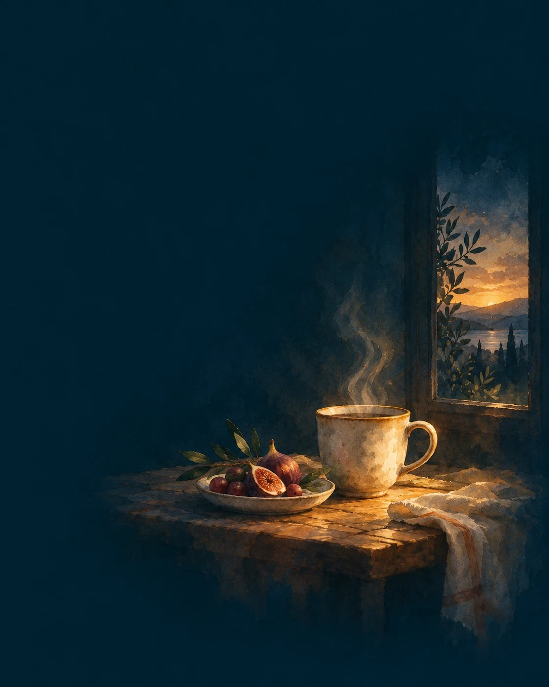
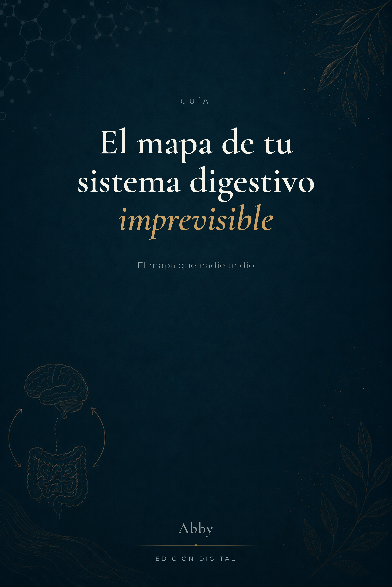

18 oct 2026
Dormir mal y la barriga: por qué la misma comida te sienta peor al día siguiente
Qué hace tu cuerpo por la noche con el intestino, por qué dormir mal baja el umbral y qué se puede cuidar con luz y rutina.
Leer
Para quien tiene la barriga imprevisible
Un test de dos minutos para reconocer qué patrón se parece más al tuyo. No diagnostica nada: te ayuda a ponerle nombre.
Hacer el testDos minutos · Gratis
El blog
18 oct 2026
Dormir mal y la barriga: por qué la misma comida te sienta peor al día siguiente
Qué hace tu cuerpo por la noche con el intestino, por qué dormir mal baja el umbral y qué se puede cuidar con luz y rutina.
Leer
15 oct 2026
Náuseas después de comer con las pruebas normales: qué pasa y qué ayuda
Por qué aparece la náusea justo después de comer, qué es la dispepsia funcional y un día de gestos para probar por una temporada.
Leer
12 oct 2026
Colon irritable: tres historias distintas bajo el mismo diagnóstico
Tres formas de llegar al mismo diagnóstico, qué cambia en cada una y tres preguntas para hacerte esta noche.
Leer
La guía
Para entender por qué tu digestión cambia de un día a otro y dejar de adivinar. El mapa que nadie te dio.
Ver la guíaQuién soy
Divulgo cómo funciona el aparato digestivo cuando el sistema nervioso lo sensibiliza, para que entiendas lo que te pasa en vez de adivinarlo.
No soy clínica ni terapeuta: no diagnostico ni trato a nadie. Explico el mecanismo.